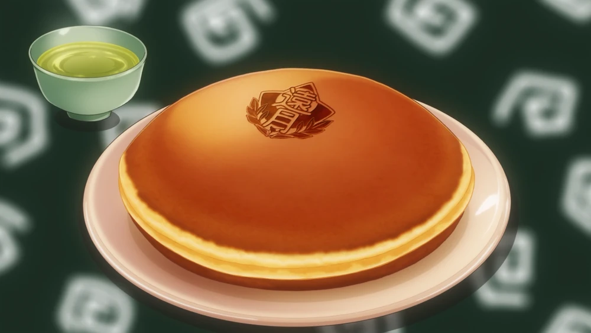

Apple Dorayaki

Description
Dorayaki is a dish made by Megumi Tadokoro in her match against Momo Akanegakubo during the 3rd Card of the 3rd Bout of the Rebels Vs. Central Régiment de Cuisine.
By giving a spin on an 800-year-old classic Japanese dish with the help of Kojirō Shinomiya, Megumi enhanced the flavor of the apple with an apple butter castella and an apple confiture, white bean paste filling. The combined flavor of this dish is like a punch packed with twice the power!!!
Ingredients
- Egg
- Wasanbon Sugar (Refined Japanese Sugar)
- Honey
- Mirin
- Wheat Flour
- Grated Tofu
- Apple Butter
- Cold Butter
- Water
- Grated Apple
- Lemon Juice
- Sugar
- White Kidney Beans
- Boiled Pectin
- tea
Steps
- Peel off skin of the beans and the beans through a strainer.
- Mix the beans in a small sclices of ginger.
- Combine 1 Tbps of water, sugar and bean paste in a pot, cook them over medium heat and add apple jelly, let the mixture reduce for 20 minutes.
- Place plastic wrap over Totsuki logo
- Break chocolate into a bowl, heat it for 2 minutes and put in a plastic bag. Cut a small hole of the bag and draw the chocolate on the logo below the plastic wrap(try your best right brain ability at this step lol :skull:).
- Get the juice of half a lemon.
- Peel and core an apple. Cube one half and grate the other.
- Whisk lemon juice, apple and button in a bowl. Then add cold butter and mix them till the butter is soft.
- Combine eggs, honey, sugar and mirin. Whisk them until the mixture is smooth.
- add flour and water to the mixture, whisk till the mixture is thined out.
- Oil the pan over medium heat. Pour the made dough on the pan and flip when bubble forms(70 seconds)and cook the other side(30 seconds).
- Spread apple butter on the cooked Dorayaki and add white bean, ginger and apple mixuture on it.
- Put on the top layer and and the logo on top and your DONE! Enjoy your Megumi version of Dorayaki!!